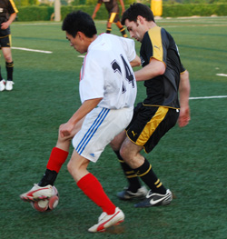
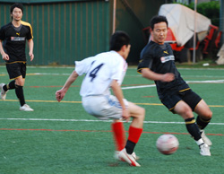
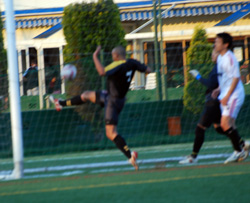
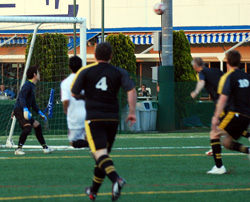
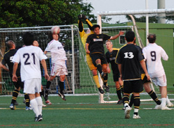
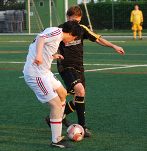
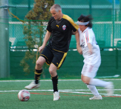

|
YCAC, Wednesday, April 29th
Panthers started the match with 5 changes to the team that beat El Diego, but we showed our depth and how far we have come this season. It was a chance for some of the old skool Panthers folk to prove their worth and that they did!
It isn’t often you are thankful for rain but I know the Panthers were as we got to play on the lovely YC&AC pitch instead of the bog that is Misato. Still never look a gift horse in the mouth and off to Yokohama we went!
The gaffer sent us onto the pitch with his usual enigmatic words of wisdom. “Go out and play football” was one of the better ones, as at one point we were slightly confused at the sight of goals, a pitch and round balls that some say you kick!
Speaking to some ex-Panthers on the pitch I quickly realised they knew the importance of this game and they weren’t going to roll over and let it happen (Sadly!). The awesome Tomo, our ex-keeper looked as imposing a presence as ever, sadly he wasn’t on our team, still we had our ever reliable keeper Kieran, ready and waiting, who incidentally slept through our last game! Luckily he and the rest of our team turned up unharmed and on time, without the need of an armed escort or being picked up around Tokyo in a mini-bus!
We started off with the wind at our backs and keen to take advantage of this gift began launching balls into the box for Jon and Scott who had some opportunities early on but failed to find the net. We kept a fairly solid shape in the first 20 minutes despite my repeated attempts to screw it all up by passing the ball to the opposition. A good bollocking from Romen pushed the ridiculous thoughts of actually trying to pass the ball out of my head and I returned to my tried and tested way of defending, wallop the ball towards their goal! Aaahhh, back to normal! Romen continued his tirade of verbal abuse across the pitch as no-one was safe from a stern talking too.
The first half also allowed Rick to show Rory Delap a thing or too with some monstrous throw ins. All of these missiles flew into the box with pace and a few led to chances that none of our 5 strikers on the pitch could convert. Strikers in defense, midfield and oddly a couple up front! Even the defenders such as me and Andy managed to have some Gary Neville like runs down towards the front. This relaxed positioning and slack defending probably led to Y-abe getting a few chances in front of goal.

Y-abe got the ball through the centre of defense with a pass that was like a hot knife through butter, their striker leapt on the opportunity to put it past Kieran but he is a wily fox and ran out to meet the ball where he was treated to a knee in the head for his trouble. When he eventually regained consciousness he wobbled back in front of goal, probably seeing three strikers and three balls and not one defender to help him out again! This time the fear got the better of him, either that or some sense, and he didn’t come out for the ball, luckily we cleared up and no harm was done to our clean sheet. Kieran though did not get off so lucky as the goal and got a good tongue lashing from Romen who was now wondering around with a little stick and small Chaplin like moustache, looking suspiciously like a mini-Hitler!
Rick managed to get a few more throw ins as we settled down a little and a lovely looping one landed right in the middle of the goal for Jon to poke into the back of the net, with a fair amount of vigour.
This caused a bit of a fuss as the Y-abe team swore blind that the ball crossed the line before it was kicked, but then again they would do! The ref pointed to the centre and we had a goal, 1-0.
We continued to play mostly in the Yabe half and we should have been 2-0 up after around 30 minutes – some neat play down our left - Kei hit a great cross to the far post where Sid cleverly volleyed the ball back across goal. Our founder Nick Webb has been campaigning to play more minutes and he now had his chance for add to his case – the ball came back to him from Sid about 2 yards out with the whole goal at his mercy. Amazing he managed to slice the ball, fall to the ground and the ball spun upwards and looped over the bar.
Next we had a disallowed goal. A free kick for a tackle on someone in our midfield (sorry!!) led Romen to walk to the ball, a cheeky lob towards the back post was headed by Jon “Salmon” Day into the path of Sid who smashed the ball into the net with his head.
Seconds passed as the Ref slowly lifted his hand……… another Panthers goal??…………Nope, Sid was called offside, suspiciously by their linesman, hmm!
Y-abe seemingly incensed by the earlier decision decided that enough was enough and decided to get a goal themselves. Making 3 changes certainly disrupted the Panthers flow and shape, but it was more small mistakes, niggley fouls and poor clearances that led to a 10 minute period where we were trapped in our own half. One of many corners conceded fell to the edge of the box were their player shot and it deflected in – only to be disallowed for offside, rightly so. Almost the same thing happened soon after, this time Saco’s deft flick was enough to deflect a goal bound shot over the bar.
To say that we were solid at the back would be like saying jelly is hard as a diamond, we definitely rode our luck for the last 10 of the first half but managed to keep the ball out and everyone on their feet. Thankfully the Ref called the first half and we trotted off for another inspiring team talk.
I had a nice little rest as a lines man for 15 minutes and got a chance to see the game in action. It was a fast paced game (for the third division!!) and the ball was back and forth in midfield and no-one really had any clear cut chances. A few balls were placed wide by the Panthers massive strike force but no goals found their way.
Gladly I got back on the pitch and had a chance to influence things slightly, luckily for me it wasn’t in a bad way and managed not to give away ridiculous opportunities. Not content on having a concussed keeper, Nick “The Manager” Webb decided to ignore Ricks warnings off his impending header and jumped at the same ball resulting in moaning and general rolling around on the floor for both individuals, no blood though so play carried on!
The Y-abe team sensed blood and a through ball again sliced open the defence to be taken by a well off-side striker (I would say that!!) I caught up with him and did my best to put him off, luckily the ball struck the post and was cleared away, and we survived another attempt.
Up front something else was going on, Jon and Sid has formed a telepathic link, their earlier attempts seemed to progress as years of futsal gelled in their minds. Little one-twos and triangles appeared out of thin air to provide some solid chances but still we couldn’t capitalise! Maybe in a few years if they keep this up they will fuse into one giant four legged footballer slash model slash coach!!
The game ended just as we started to wind it up a little but it still ended as a very tense affair. Much like Man Utd last night we finished 1-0 and should have had some more. This one definitely goes down as one of the hardest of the season, nice one Y-abe, nice one Ref, nice one Panthers. Promotion beckons!!
Report by Lee Rawlinson.
|